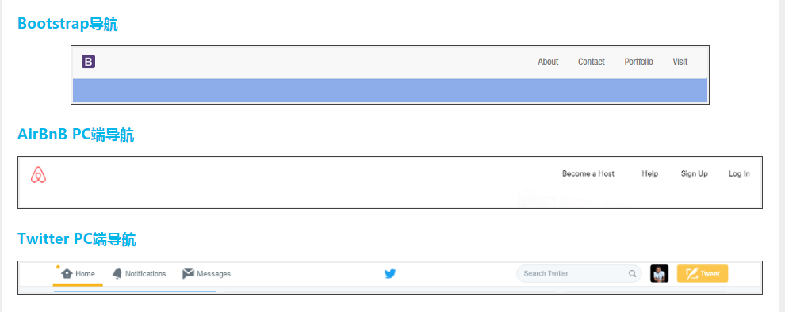

The Flex Sticky Footer
关于 Sticky Footer
如果页面内容不够长的时候，页脚footer粘贴在视窗底部；如果内容足够长时，页脚footer会被内容向下推送。
注意了这里所说的是，页脚footer永远固定在页面的底部，而不是永远固定在显示器屏幕的底部。这一点与我们常见的stick header是不同的。
实现sticky footer的方法有很多种，下面是几种常见的解决方案，不过他们仍然有其自己的局限性。
- CSS Sticky Footer Layout
- Ryan Fait's CSS Sticky Footer
- Sticky Footer
- Sticky CSS footers: The flexible way
- Modern Clean CSS “Sticky Footer”.(Boostrap)
使用flexbox,完美实现sticky footer。
Html
<body class="Site">
<header class="Site-header">...</header>
<main class="Site-content">...</main>
<footer class="Site-footer">...</footer>
</body>Css
/*
* 1. Avoid the IE 10-11 'min-height' bug.
* 2. Set 'flex-shrink' to '0' to prevent Chrome, Opera, and Safari
* from letting these items shrink to smaller than their content's default minimum size.
*/
.Site {
display: flex;
flex-direction: column;
height: 100vh; /* 1 */
}
.Site-header, .Site-footer {
flex-shrink: 0; /* 2 */
}
.Site-content {
flex: 1 0 auto; /* 2 */
}关于 Flex Nav

Other Use
- 水平居中
- 垂直居中
- 等高